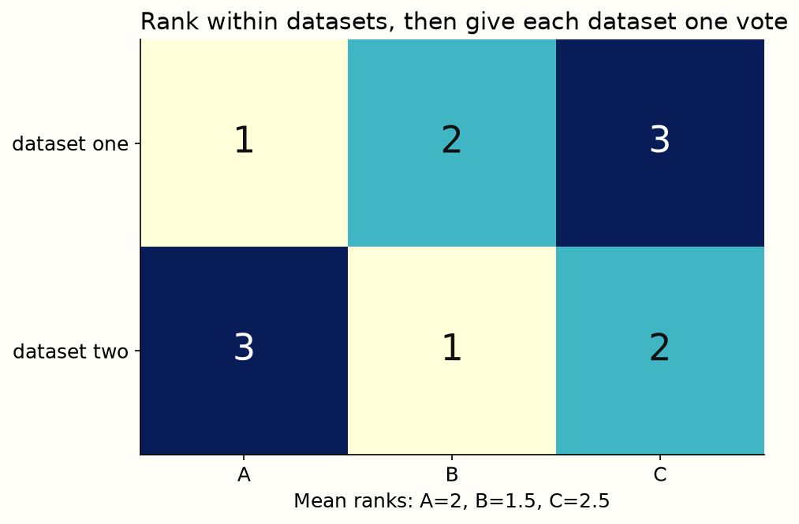
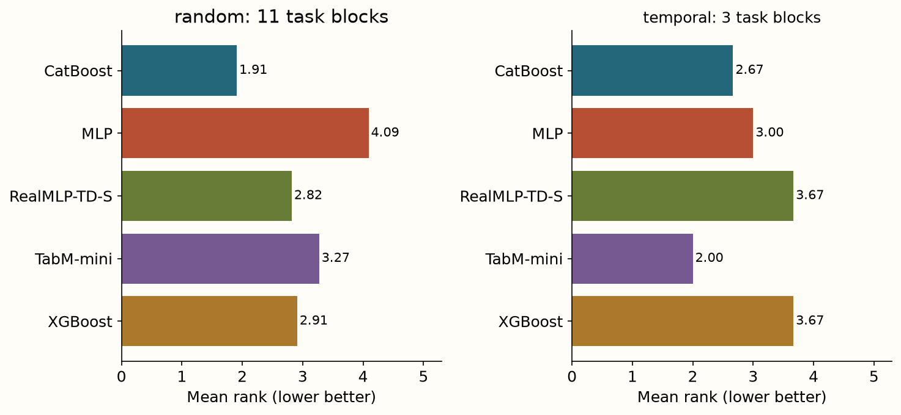
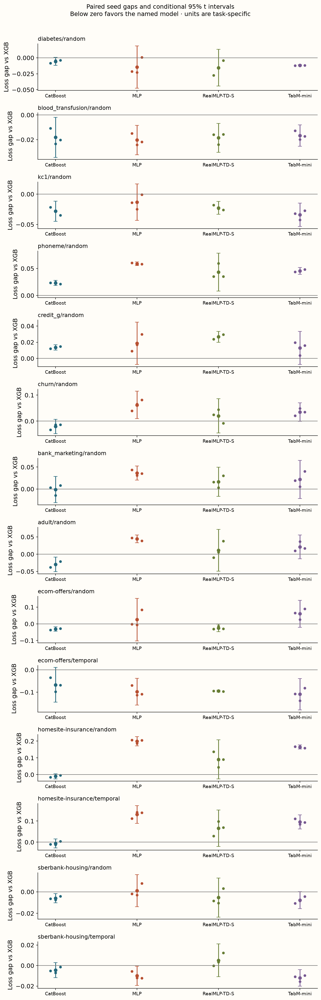
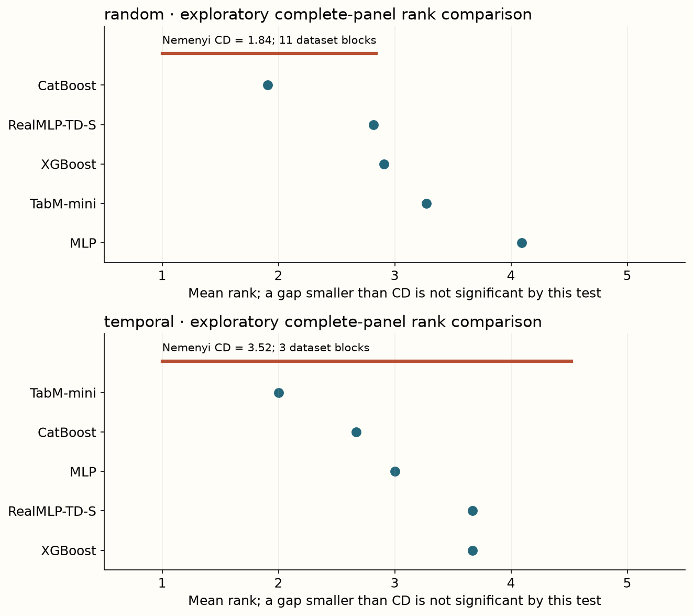

Year 2 · Quarter 2 · Lesson 060
A baseline comparison you can defend
Understand the computation. Challenge the evidence. Produce a defensible result.
Core reading: 35–50 minutes. Lab: 45–75 minutes plus declared experiment time. This sequence builds the strong single-table baseline and information discipline required to test the relational thesis.
Retrieve before reading
Without notes: Do two split regimes of one dataset create two independent datasets? Explain why, then recall a related failure mode from an older lesson.
The checkpoint is a defensible comparison¶
Your goal is to compare XGBoost, CatBoost, an MLP, RealMLP and TabM under a protocol you can explain and rerun. The passing outcome is an accurate evidence report, including a failed neural gain if that is what you measure. This is the single-table baseline the later relational work must beat.
The core sources are TabM, RealMLP, TabArena and TabReD. They motivate the arms and protocol questions. Our small comparison does not reproduce their original tuning budgets, data rosters or paper tables.
Turn a model comparison into an executable argument¶
The checkpoint asks you to connect four things: a deployment question, a training procedure, saved predictions and a conclusion. If any link is missing, the result becomes difficult to audit. A score table without row identities cannot prove pairing; a recipe without predictions cannot reconstruct the metric; a conclusion without a target population can overgeneralize the evidence.
Begin with an explicit claim template: “Under these fixed splits and resource limits, procedure A had this measured advantage over procedure B, with this variation across repetitions.” Fill it from artifacts after the run. This keeps the prose attached to what was actually measured.
Random and temporal splits form separate panels because they ask different questions. The same dataset appearing in both panels is not two independent datasets. Likewise, three seeds on fixed rows improve your view of algorithmic variability without tripling the number of independent tasks.
The checkpoint deliberately reuses strong tree and neural recipes. Its purpose is to compare credible procedures, not to make a new architecture look good against an undertrained baseline. Family-specific preprocessing and optimization are acceptable when their information access and resource allocation are declared.
Decide what failure means before encountering it¶
A timeout, unsupported feature type, nonfinite prediction and ordinary poor score are different outcomes. Preserve their status and cost. Silently dropping unsuccessful tasks can make a procedure look stronger by changing its denominator. A deployment decision may care deeply about coverage and reliability even when average loss on successful tasks is excellent.
Freeze the experiment before fitting¶
Eight public tables cover small numeric tasks and mixed-type business tables: diabetes, blood transfusion, kc1, phoneme, German credit, churn, bank marketing and adult income. Three additional TabReD releases—Ecom Offers, Homesite Insurance and Sberbank Housing—provide random and temporal evaluation. That is eleven underlying datasets, not fourteen independent ones: the two split regimes of each TabReD task are related observations.
Random public-table runs use at most 900 rows with a fixed 60/20/20 train/validation/test split and split seed 60. TabReD uses released split 0, label-blind caps of 540 training and 180 validation/test rows, and the earlier release loader. The measured task is binary log loss except Sberbank's released regression target, scored by root mean squared error. Preserve the release's target interpretation from lesson 55. Numeric and binary TabReD columns are included; categorical columns there are omitted and counted in provenance.
The two candidates per fitted arm vary depth or learning rate. Trees use 100 boosting rounds; neural candidates use 24 epochs and width 64; TabM-mini has eight members. Validation selects candidates and neural epochs. Model seeds 0, 1 and 2 are crossed with all arms on the same rows. Equal candidate counts do not imply equal compute or equal effective search effort: a neural candidate also selects an epoch. Record both rather than claiming perfect budget equality.
Row identity is the spine of the comparison¶
Let I_train, I_valid and I_test be sets of stable row IDs. Each must be nonempty, contain no duplicate ID and be disjoint from the others. These are structural assertions you can test before fitting. They do not prove that features are historically legal or that entities are independent, but they catch a large class of accidental overlap and alignment errors.
Store these IDs with the dataset version and target definition. A positional index generated after sorting is not necessarily the same identity used before sorting. When predictions are saved, include the row IDs so metrics can be reconstructed in the original order or after an explicit join.
Preprocessing must be fitted on the training rows. Validation and test then pass through that frozen state. For a temporal panel, any label-based retrieval or feature aggregation must additionally respect the time at which information became available. The split validator is one gate, not the entire leakage audit.
Candidate budgets should be declared before fitting. Equal candidate counts, equal wall-clock limits and published defaults are distinct comparison designs. Record the one you use and the realized resources. A method receiving a larger search should not be described as winning solely because of its architecture.
Preserve each baseline's defining recipe. RealMLP's scaling and optimizer groups, TabM's member objective and probability aggregation, and tree early-stopping settings all affect the fitted procedure. Reusing a name while replacing its recipe with a generic loop weakens the comparison.
Preserve each baseline's important recipe¶
Training-only encoders median-impute numeric inputs and one-hot encode categorical values. Unknown categories at inference map to the declared encoder's unknown representation. This common input treatment removes CatBoost's native categorical advantage; the report must call that a limitation. It is a controlled numeric/one-hot comparison, not the strongest possible mixed-type CatBoost benchmark.
MLP and TabM inputs are standardized from training rows. RealMLP uses training-derived robust scaling and smooth clipping, learned feature scales, neural tangent parameterization, its oscillating learning-rate schedule and parameter-group multipliers. Its classification objective includes label smoothing. The local width, epochs, numeric encoding, validation metric and candidate choice differ from the full paper defaults; retain the name reduced RealMLP-TD-S recipe. TabM averages member probabilities, with separate member losses during fitting. These mechanisms were implemented in lessons 53 and 54; the notebook exposes the reused source and the live selection/reporting code.

Test labels enter once the choice is frozen¶
The fitting function receives training features/targets and validation features/targets. It returns a predictor, its validation error and its selected epoch. Only after comparing those validation errors does the runner supply test features; only the metric routine receives test labels. This interface makes the boundary reviewable. A checksum alone cannot prove the boundary, but it can identify exactly which implementation was used.
Keep every selected prediction, target, candidate error, chosen index, split ID and measured duration. The lab checks that the chosen index minimizes validation error and reconstructs every reported test metric from saved predictions. A wrong row order can still produce a plausible score, which is why row identity and partition disjointness are separate checks.
Save the choice before saving its evaluation¶
Suppose validation chooses candidate 2 from a list of five. Save that index, its hyperparameters and its checkpoint identity before calculating the final test metric. This makes the causal order inspectable: validation selected; test evaluated. A later analysis can reconstruct the decision without relying on a narrative about what the author intended.
For classification, store class order with probability columns. For regression, store the output units and any inverse target transform. A correct model can appear wrong if predictions and labels are misaligned, and an incorrect metric implementation can produce a plausible-looking number.
Reconstruct the score from saved predictions using a separate evaluator. This checks the artifact chain and allows future summaries without refitting. It does not create a second independent experiment. Reanalysis and new measurements must be labeled separately.
If you inspect test failures and then change the model, the change is a new hypothesis informed by that test. Keep the original result and obtain fresh evaluation evidence for the revision. The practical goal is not to avoid learning from mistakes; it is to stop using the same evidence both to invent and confirm the fix.
Read the result at three resolutions¶
First inspect each dataset's raw metric, three seed points, sample standard deviation and paired gaps against the tree baseline. These seed intervals are conditional on fixed rows and splits; three seeds provide a fragile estimate of training randomness. They do not measure uncertainty over future enterprises or temporal regimes.
Next average seed errors within each dataset, rank the arms there and average ranks. Keep random and temporal summaries separate. A Friedman test treats datasets as blocks; the Nemenyi critical difference supplies an exploratory pairwise rank comparison. With three temporal tasks, power is weak. A nonsignificant result neither proves equivalence nor rescues an unsupported superiority claim.
Finally inspect fitting/selection time and inference time. These CPU measurements include the declared local pipeline, not a GPU-serving benchmark. A method with a tiny score advantage and much larger latency may be a poor deployment baseline. The task distribution, tolerance for error and latency budget determine the practical choice.

Measured interpretation. Random: 11 task blocks; CatBoost has the smallest mean rank (1.909); Friedman p=0.0268, Nemenyi CD=1.839. Temporal: 3 task blocks; TabM-mini has the smallest mean rank (2.000); Friedman p=0.6626, Nemenyi CD=3.522. These restricted panels and small budgets support a local baseline decision, not universal superiority. Intervals below describe model-seed variation on fixed rows.
Inspect the numerical evidence table
| regime | dataset | arm | mean | sd | seconds |
|---|---|---|---|---|---|
| random | adult/random | CatBoost | 0.4088 | 0.0038 | 0.7293 |
| random | adult/random | MLP | 0.4825 | 0.0166 | 2.3677 |
| random | adult/random | RealMLP-TD-S | 0.4498 | 0.0122 | 4.9370 |
| random | adult/random | TabM-mini | 0.4596 | 0.0175 | 7.5416 |
| random | adult/random | XGBoost | 0.4385 | 0.0121 | 0.3302 |
| random | bank_marketing/random | CatBoost | 0.2452 | 0.0031 | 0.9240 |
| random | bank_marketing/random | MLP | 0.2830 | 0.0071 | 1.3207 |
| random | bank_marketing/random | RealMLP-TD-S | 0.2629 | 0.0059 | 3.2785 |
| random | bank_marketing/random | TabM-mini | 0.2681 | 0.0102 | 4.5277 |
| random | bank_marketing/random | XGBoost | 0.2464 | 0.0090 | 0.1699 |
| random | blood_transfusion/random | CatBoost | 0.4733 | 0.0021 | 0.1728 |
| random | blood_transfusion/random | MLP | 0.4712 | 0.0026 | 0.9723 |
| random | blood_transfusion/random | RealMLP-TD-S | 0.4730 | 0.0034 | 1.0973 |
| random | blood_transfusion/random | TabM-mini | 0.4748 | 0.0032 | 3.2934 |
| random | blood_transfusion/random | XGBoost | 0.4915 | 0.0066 | 0.1067 |
| random | churn/random | CatBoost | 0.2425 | 0.0057 | 1.3303 |
| random | churn/random | MLP | 0.3252 | 0.0161 | 1.3738 |
| random | churn/random | RealMLP-TD-S | 0.2831 | 0.0281 | 2.6067 |
| random | churn/random | TabM-mini | 0.2977 | 0.0102 | 4.9862 |
| random | churn/random | XGBoost | 0.2629 | 0.0054 | 0.2965 |
| random | credit_g/random | CatBoost | 0.5444 | 0.0020 | 0.8960 |
| random | credit_g/random | MLP | 0.5495 | 0.0108 | 1.5185 |
| random | credit_g/random | RealMLP-TD-S | 0.5575 | 0.0033 | 1.7569 |
| random | credit_g/random | TabM-mini | 0.5439 | 0.0071 | 5.1408 |
| random | credit_g/random | XGBoost | 0.5308 | 0.0011 | 0.1994 |
| random | diabetes/random | CatBoost | 0.4568 | 0.0022 | 0.4775 |
| random | diabetes/random | MLP | 0.4478 | 0.0108 | 1.7885 |
| random | diabetes/random | RealMLP-TD-S | 0.4469 | 0.0094 | 2.1946 |
| random | diabetes/random | TabM-mini | 0.4505 | 0.0024 | 3.3978 |
| random | diabetes/random | XGBoost | 0.4624 | 0.0025 | 0.1807 |
| random | ecom-offers/random | CatBoost | 0.5742 | 0.0058 | 3.5141 |
| random | ecom-offers/random | MLP | 0.6301 | 0.0544 | 1.8237 |
| random | ecom-offers/random | RealMLP-TD-S | 0.5801 | 0.0045 | 4.2475 |
| random | ecom-offers/random | TabM-mini | 0.6650 | 0.0375 | 6.2286 |
| random | ecom-offers/random | XGBoost | 0.6047 | 0.0050 | 0.7005 |
| random | homesite-insurance/random | CatBoost | 0.2429 | 0.0055 | 3.5493 |
| random | homesite-insurance/random | MLP | 0.4524 | 0.0066 | 1.5457 |
| random | homesite-insurance/random | RealMLP-TD-S | 0.3436 | 0.0439 | 1.7845 |
| random | homesite-insurance/random | TabM-mini | 0.4176 | 0.0102 | 8.4122 |
| random | homesite-insurance/random | XGBoost | 0.2529 | 0.0056 | 0.7379 |
| random | kc1/random | CatBoost | 0.3452 | 0.0041 | 0.9139 |
| random | kc1/random | MLP | 0.3601 | 0.0127 | 1.1111 |
| random | kc1/random | RealMLP-TD-S | 0.3507 | 0.0013 | 1.3726 |
| random | kc1/random | TabM-mini | 0.3393 | 0.0078 | 4.0671 |
| random | kc1/random | XGBoost | 0.3734 | 0.0036 | 0.1986 |
| random | phoneme/random | CatBoost | 0.3283 | 0.0031 | 0.4834 |
| random | phoneme/random | MLP | 0.3638 | 0.0054 | 1.1621 |
| random | phoneme/random | RealMLP-TD-S | 0.3484 | 0.0097 | 1.5309 |
| random | phoneme/random | TabM-mini | 0.3507 | 0.0063 | 3.9720 |
| random | phoneme/random | XGBoost | 0.3051 | 0.0046 | 0.1774 |
| random | sberbank-housing/random | CatBoost | 0.2275 | 0.0030 | 25.4714 |
| random | sberbank-housing/random | MLP | 0.2345 | 0.0022 | 2.5182 |
| random | sberbank-housing/random | RealMLP-TD-S | 0.2281 | 0.0031 | 2.4430 |
| random | sberbank-housing/random | TabM-mini | 0.2257 | 0.0032 | 15.2152 |
| random | sberbank-housing/random | XGBoost | 0.2335 | 0.0047 | 8.4804 |
| temporal | ecom-offers/temporal | CatBoost | 0.6307 | 0.0170 | 2.6612 |
| temporal | ecom-offers/temporal | MLP | 0.6006 | 0.0180 | 1.4098 |
| temporal | ecom-offers/temporal | RealMLP-TD-S | 0.6029 | 0.0188 | 1.4306 |
| temporal | ecom-offers/temporal | TabM-mini | 0.5889 | 0.0166 | 6.3019 |
| temporal | ecom-offers/temporal | XGBoost | 0.6980 | 0.0181 | 0.4708 |
| temporal | homesite-insurance/temporal | CatBoost | 0.2996 | 0.0066 | 4.4270 |
| temporal | homesite-insurance/temporal | MLP | 0.4370 | 0.0154 | 1.9818 |
| temporal | homesite-insurance/temporal | RealMLP-TD-S | 0.3716 | 0.0339 | 2.0044 |
| temporal | homesite-insurance/temporal | TabM-mini | 0.4019 | 0.0147 | 10.3447 |
| temporal | homesite-insurance/temporal | XGBoost | 0.3060 | 0.0023 | 0.9528 |
| temporal | sberbank-housing/temporal | CatBoost | 0.2905 | 0.0016 | 22.7873 |
| temporal | sberbank-housing/temporal | MLP | 0.2851 | 0.0042 | 2.4374 |
| temporal | sberbank-housing/temporal | RealMLP-TD-S | 0.3002 | 0.0055 | 17.3501 |
| temporal | sberbank-housing/temporal | TabM-mini | 0.2830 | 0.0021 | 15.6292 |
| temporal | sberbank-housing/temporal | XGBoost | 0.2951 | 0.0014 | 5.7929 |

The paired intervals condition on the fixed split and only three downstream seeds; they do not cover split uncertainty or pretraining variation. A negative loss gap favors the named model over XGBoost. Inspect each task in its own metric units.

The critical-distance bar belongs to the complete declared method pool. It is an exploratory multiple-comparison threshold over dataset-level ranks, not a confidence interval around a model score.
Start at the row, then the task, then the collection¶
At the row level, inspect probability validity, class alignment and a few metric contributions. For a positive binary label with predicted probability 0.8, log loss contributes −ln(0.8)≈0.223. For probability 0.2 it contributes about 1.609. This explains why a few confident errors can matter even when accuracy changes little.
At the task level, average the declared repetitions and compute paired model differences. Keep raw score units meaningful within the task. Report seed variation as conditional on the fixed split when only initialization or procedure randomness changed.
At the collection level, rank models within each dataset after averaging seeds. With three datasets, the rank analysis has three task blocks in each regime, not nine seeds or six random/temporal combinations. Small task counts impose real limits on broad significance claims.
A mean-rank winner is an observed ordering, not an established universal winner. Friedman and Nemenyi summaries can indicate whether the panel resolves differences under their assumptions, but failure to reject does not prove equivalence. Report the unresolved uncertainty plainly.
Quality and cost form a joint decision¶
Two methods can trade lower loss for greater latency or search cost. A Pareto-dominated method is worse on every declared objective relative to another measured method; a nondominated method is not automatically best. The deployment constraint determines which trade-off matters.
Measure cost consistently. Include or exclude loading, preprocessing and context preparation explicitly. A warm prediction timer and a cold end-to-end timer answer different questions. Do not place them on one axis as though they measured the same operation.
The exit report should name the preferred local baseline, the evidence supporting it and a concrete condition that would change the decision. For example, a tighter latency constraint, a later temporal window or more datasets could overturn the choice. That conditional conclusion is more useful than a broad winner claim unsupported by the panel.
A model-by-regime interaction is more informative than two winners¶
Suppose A's loss is 0.30 on random rows and 0.50 on later rows, while B's loss is 0.32 and 0.40. A wins the random comparison by 0.02; B wins the temporal comparison by 0.10. The relative gap changes by 0.12. That change motivates a hypothesis about how the procedures respond to the regime difference.
It does not yet identify the cause. The temporal panel may have different training size, class balance, feature availability or target difficulty. A useful follow-up holds more of these factors fixed or measures them explicitly. For example, matching training sample size can distinguish a data-volume explanation from a temporal-distribution explanation.
The same logic applies to context size, missing features and tuning budget. Instead of presenting a winner separately under each setting, inspect how the paired model difference changes with the intervention. This is the quantity that connects a mechanism prediction to comparative evidence.
Keep uncertainty attached to the unit that changed. Repeated seeds on fixed temporal windows describe algorithmic variation; repeated windows add information about temporal stability. The checkpoint's fixed design should not be described as having measured the latter unless those windows were actually evaluated.
Exit: write a report a skeptic can rerun¶
Submit the complete crossed result table, separate random/temporal rank summaries, paired dataset gaps, timing table and a reproduction ledger. Identify one dataset where the methods disagree and trace the disagreement to a hypothesis you can test—sample size, feature representation, irregular target behavior or temporal shift. The current run cannot establish that hypothesis causally.
State which arm you would deploy under a stated budget, what evidence could reverse that decision, and which published claim remains untested. The broader closer runner increases resource budgets using the same implementation. Its output remains a new local experiment; there is no “paper” switch that turns eleven reduced tasks into four original paper protocols.
Run the companion lab
What you will do: Train five model families on a small real-data task, select recipes on validation, and audit the broader saved comparison.
validate_partitions: Check three nonempty, duplicate-free and mutually disjoint row-ID partitions.choose_validation: Freeze the candidate from validation errors only, rejecting invalid scores.paired_summary: Reject incomplete dataset×arm×seed coverage, average seeds before ranking, and report conditional uncertainty and cost.
Author-reference evidence: Five families, eleven underlying datasets, three seeds; random and temporal regimes kept separate.
Submit: your completed notebook and student-l060-exit.json, plus your written interpretation. CHECK cells give immediate code feedback; paste the EXIT output here for a reasoning review.
Student notebook · Prepared lab · Open in Colab
3 substantive code tasks feed the live experiment, followed by behavioral CHECKs and a written EXIT artifact. The notebook contains the explanation and portable figures so it is teachable independently.
Ask me follow-up questions about any operation, CHECK or conclusion you cannot defend. Paste the EXIT artifact and your explanation for review. Revisit the retrieval question tomorrow and again in a week, before reopening the reference.